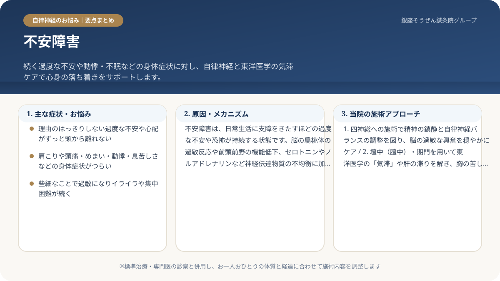

不安障害の鍼灸
続く過度な不安や動悸・不眠などの身体症状に対し、自律神経と東洋医学の気滞ケアで心身の落ち着きをサポートします。
まず知っておきたい要点と改善の流れ

不安障害は、日常生活に支障をきたすほどの過度な不安や恐怖が持続する状態です。脳の扁桃体の過敏反応や前頭前野の機能低下、セロトニンやノルアドレナリンなど神経伝達物質の不均衡に加え、慢性ストレスによる副腎皮質からのコルチゾール過剰分泌や脳腸相関の乱れも深く関わります。東洋医学では気の巡りが滞る「気滞」や「肝気上逆」と捉え、自律神経と全身の陰陽バランスを整えることが心身の安定につながります。
このようなお悩みはありませんか？
- ✓理由のはっきりしない過度な不安や心配がずっと頭から離れない
- ✓肩こりや頭痛・めまい・動悸・息苦しさなどの身体症状がつらい
- ✓些細なことで過敏になりイライラや集中困難が続く
- ✓寝つきが悪く夜中に目が覚めるなど睡眠の質が落ちている
当院の施術アプローチ・改善の流れ
なぜ鍼灸で改善へ向かうのか？（作用機序の図解）
不安障害に対する鍼灸は、体性-自律神経反射による交感・副交感神経の切替機序を通じて、お体本来の回復力を引き出します。

首肩・みぞおち・手足の過緊張ポイントへ、交感神経を刺激しすぎない優しい刺激を行います。
体性-自律神経反射を通じて脳幹の迷走神経核へ働きかけ、心拍変動（HF/SDNN）を整えます。
過剰なコルチゾール分泌や過覚醒状態を落ち着かせ、深い呼吸と入眠スイッチを引き出します。
「活動（昼）」と「休息（夜）」のメリハリが戻り、動悸・不眠・倦怠感の波が穏やかになります。
院長YouTube解説・関連動画
不安障害の定義
不安障害は大きな枠組みの１つで、頭鳴りや耳鳴りやめまいなどと関連しています。不安障害では強度や継続性によって日常生活に影響を与えるほど症状が大きくなることがあります。
不安障害の定義は、日常生活の様々な状況の過度な不安や恐怖感を特徴とする精神的な健康上の問題です。この生涯は、持続性で日常生活や仕事人間関係に影響を及ぼす可能性があるのです。症状の重症度は原因によって違います。
不安障害では毎日生活する上で、慢性的になんとなくの不安や心配をずっと持った状態になります。不安や心配が尽きず、少しずつ身体的にも精神的にも症状が現れ、さらに不安になったり心配になったりするという悪循環がおきます。
不安障害で現れる不安は、一時的ではなく持続的に続くもので程度も明らかに過剰なため、思うように気持ちをコントロールすることができなくなります。
原因は今のところはっきりと明らかになっていない
不安障害の原因は今のところはっきりと明らかになっていません。原因に関係していると考えられていることは、性格や遺伝、ストレスや自律神経の障害などです。
特に性格が神経質の場合、原因になる可能性があると考えられています。
パニック障害や社交不安障害の場合はっきりとした苦手な状況がありますが、全般性不安障害の場合非常に幅広い状況で不安を感じます。日常生活の中で起きること全てが不安に感じる対象になります。
そのため、周りの人も、心配性な人や少し神経質な人と思ってしまうだけのことが多いです。
遺伝的要因:不安障害は家族内で発生することがあり、これは遺伝的要素が関与していることを示唆しています。特定の遺伝子が不安障害のリスクを高める可能性があります。
脳の神経化学的不均衡:セロトニン、ノルアドレナリン、ドーパミンなどの神経伝達物質の不均衡が、不安障害の発症に関与していると考えられています。これらの物質は気分や感情の調整に重要な役割を担っています。
脳構造の異常:脳の特定の部位の異常や機能不全が、不安障害の発症に寄与することが示されています。これらの領域は感情の処理や恐怖の評価に関与しています。
個人の性格特性:ネガティブ思考、完璧主義、自己評価の低さなどの性格特性が不安障害のリスクを高めることがあります。
ストレスフルな生活イベント:死別、離婚、職場でのストレス、経済的困難など、重大な生活の変化やストレスが多い環境は、不安障害を引き起こすか、既存の症状を悪化させることがあります。
育児や家庭環境:過保護または過度の批判的な家庭環境、親の不安障害などが子どもの不安障害の発症に影響を与えることがあります。
物質使用:アルコール、カフェイン、薬物の乱用が不安障害を引き起こしたり悪化させたりすることがあります。
健康問題:慢性的な健康問題や特定の状態も、不安を感じやすくすることがあります。
🎥 他のYouTube切り抜き・解説を読む（あと1件）▼
不安障害に関与する脳の領域
不安障害の脳内の機序はあまり解明されていませんが、現在の研究に基づくと脳の様々なところが関与していると言われています。
扁桃体は脳の中で感情を処理する領域の一部です。恐怖や危険に対する反応を制御している部分で、不安障害がある人は扁桃体が過敏に反応していると言われています。
扁桃体は脳の側頭葉の内側に位置するアーモンド状の脳の各群で、情緒の処理を担当しています。特に恐怖や快感の感覚を伴う記憶の形成に関与しています。
頭鳴りの人は音を記憶してしまっているのではないかという話があります。音を認識するエリアは側頭葉の聴覚野で、その真裏に扁桃体があるため、恐怖心や頭鳴りや耳鳴りに対する記憶の形成は必然なのです。
【扁桃体の働き】
①恐怖刺激を受け取り情報を解析して適切な身体反応を起こす
同じ状況で頭鳴りが起こる人は多く、頭鳴りのシチュエーションを記憶しているということです。
②情緒的な記憶の形成
恐怖や快感などの強い感情を伴う出来事は扁桃体を通して記憶として認識されます。
③社会的認知の形成
扁桃体は他者の感情を理解し、社会的な状況を評価する時にも作用する
扁桃体の異常は不安障害を始め、PTSDや自閉症などの心の問題と関連性がある領域なのです。
頭前皮質は、意思決定や計画、社会的行動、意識的な感情制御などを担当している部分です。
不安障害では前頭前皮質の活動の異常や他の脳の領域の接続に問題があるとされています。
不安障害には、セロトニンやドーパミン、ノルアドレナリンといった神経伝達物質の不均衡が関係しています。
長期的なストレスや不安が継続すると脳の構造や機能が変わると言われています。これを神経の可塑性といい、不安障害の発症や持続に関係しています。
虐待やトラウマなどの強い記憶は脳にこびりついて脳が萎縮するという報告もあります。
ストレスホルモンであるコルチゾルの過剰な分泌や調節の問題が不安障害の発症に関与していると言われています。
コルチゾルは副腎皮質から分泌されるため、当院では副腎皮質からのアプローチを多く行っています。
不安障害では、精神的にも身体的にも症状が現れる
全般性不安障害では、精神的にも身体的にも症状が現れます。色々な症状は、過剰な不安や心配が尽きず、コントロールすることができなくなることで起こります。
身体的に現れる症状には、頭痛や頭の圧迫感や緊張感、めまい、悪寒や熱感、手足の冷え、便秘や頻尿などがあります。
精神的に現れる症状には、注意力が散漫になる、記憶力が悪くなる、疲れやすい、根気がない、イライラする、怒りっぽくなる、悲観的になる、人に会いたくなくなる、寝つきが悪いなどがあります。
【精神的・感情的症状】
過度の心配や不安:日常的な事柄に対して常に過度に心配し、これが長期間にわたって続きます。
集中困難:不安が原因で、日常の活動や仕事、学習に集中することが困難になります。
緊張感:常に神経が高ぶっており、落ち着かない感覚があります。
過敏性:小さな刺激やストレスに対しても過剰に反応するようになります。
不安による回避行動:不安を引き起こす可能性のある場面や活動を避けるようになります。
不安からくるイライラ:身の回りの事に対して怒りやすく、イライラすることが多くなります。
【身体的症状】
筋肉の緊張:長期間にわたり筋肉が緊張し、リラックスすることが難しくなります。
疲労感:常に疲れている感じがし、エネルギーがなくなります。
睡眠障害:入眠困難、中途覚醒、早朝覚醒など、質の良い睡眠を取ることができなくなります。
身体的な不調:頭痛、胃痛、吐き気などの身体的な症状が現れることがあります。
心拍数の増加:不安を感じると心拍数が上がり、動悸が感じられることがあります。
呼吸困難:不安が強い時に、息苦しさや呼吸が浅くなる感じがします。
【社会的影響】
対人関係の問題:不安障害により、友人や家族との関係が悪化することがあります。
職場や学校での問題:不安によって職場や学校でのパフォーマンスが低下します。
不安障害の改善方法は、薬とカウンセリング
全般性不安障害の改善方法は、薬とカウンセリングです。過剰な心配が尽きない時には、カウンセリングだけで改善することは難しいため、薬を使って気持ちを落ちつかせることも必要になるのです。
身体的な緊張や不眠が続く場合は、抗不安薬のベンゾジアゼピンを使います。持続的に続く不安や心配には、SSRIを使うことが多いです。
薬を使って、心と体の症状をやわらげていき、症状が楽になると、不安な気持ちを受け止めることができるようになります。不安を受け止めることができるようになり症状が軽くなると、カウンセリングなどで改善を行います。
カウンセリングでは、出来事に対する認知を修正していくことを行います。改善に向けて目標を設定し、目標に向かって取り組むことを繰り返し、よりよい行動習慣ができるようになることで改善が期待できます。
・認知行動療法
不安を引き起こす思考や行動のパターンを測定し、それらを変えることを目的とするアプローチです。不安を管理し、回避行動を減らし、リラクゼーション技術を学ぶことに焦点を当てて行います。
・カウンセリング
個人の感情や悩みを共有し、問題解決の手助けをする方法です。
・リラクゼーション
深呼吸や瞑想などの技法を利用して心身の緊張を和らげる方法です。運動を行うこともあります。鍼による改善はリラクゼーションに分類されます。
●抗不安薬
・ベンゾジアゼピン系の薬（デパス、リボトリール、ジアゼパム）
短期間の不安の緩和に役立ちます。ガンマアミノ酪酸という神経伝達物質の活性を高め、中枢神経系を鎮静します。長期の使用は依存のリスクがあります。
●抗うつ剤
・SSRI（選択的セロトニン再取り込み阻害剤）、SNRI（セロトニノルアドレナリン再取り込み阻害剤）
長期間の不安の改善に使われます。 セロトニンの再取り込みを阻害し脳内のセロトニン濃度を増加させることで気分が改善され、不安が軽減されます。
ベンゾジアゼピン系の薬は依存性が心配で、当院にいらっしゃるコロナ後遺症の人のおおくはベンゾジアゼピン系の薬の薬害の話をします。しかし、これは薬物依存の定義に当てはまる薬物を繰り返し使いたいという気持ちに駆られる種類の依存ではありません。ベンゾジアゼピン系の薬は、直接ドーパミン放出ニューロンに作用する報告はないのです。
脳の腹側被蓋野という領域でドーパミン放出に影響を与える可能性が報告されています。心地よい刺激や気持ちいいなという感覚を求めて積極的ににベンゾジアゼピン系の薬を常用する依存性は効きにくいと考えられています。
より問題とされているのは薬剤耐性の獲得と離脱症状の辛さです。ベンゾジアゼピン系の薬は使い続けると脳が恒常性を保とうとして薬剤の効果が薄まります。また、薬を減らすと不安感や焦燥感の高まり不眠症などの離脱症状が現れる可能性があります。
そのため、数年といった長期的な薬を使い続けることはあまりお勧めされてはいません。
乳酸菌と不安障害
当院には不安障害や脳過敏、耳鳴りといった異常な不安感を訴える人が多いです。一般的な考え方では不安感は精神的に弱い、生まれつきだと思う人もいるかもしれませんがそんなことはありません。
不安感を強く感じる人は脳が過敏状態です。症状が良くなったり脳の過敏状態が落ち着いたりすると不安感は消え去って悩んでいた症状やトラウマすら忘れてしまいます。
薬を飲んで不安感を落ち着かせる人も多いですが鍼灸院で見るリアルは違います。良くなれば完全に忘れて薬も飲み忘れます。それが不安症の本当の完全な回復なのです。
不安障害は常に不安感や心配が長時間続くことで日常生活に支障が出る状態のことです。動悸や息切れ、寝れない、集中力がない、などただの心配性ではなく脳の神経伝達物質やホルモンバランスが乱れている状態なのです。特に近年はストレス社会や睡眠不足、スマホ過多による脳疲労で不安感を感じる人が非常に増えています。
セルフケアのオススメは、乳酸菌の摂取です。乳酸菌の摂取は脳腸相関に関係しています。腸には1億個以上の神経細胞があって腸内細胞が作る代謝物は脳の働きに大きく影響します。乳酸菌が作るGABAや短鎖脂肪酸は脳の興奮を抑えリラックスを促す作用があるため、腸を整えることが心の安定にもつながるのです。これが乳酸菌がメンタルに良いと言われる所以です。院長もピルクルを毎日飲んで仕事終わりにヨーグルトを必ず1個食べています。
不安障害を抱えている人や体調が悪い人は便秘がちです。当院でも酸化マグネシウムを一生懸命飲んでいる人が多いです。当初不安障害の人は活動量が減るために腸内の便が直腸を刺激しなくて便秘がちになると思っていました。しかし、そもそも腸内の環境や腸自体排便能力に問題があるとわかったのです。
鍼でも腸自体の動きを良くすることはできますが、腸内の問題には乳酸菌の摂取がオススメです。
国内外の研究では特定の乳酸菌株を摂取することでストレスの軽減不安感の軽減が報告されています。いろんな論文を見ていますが4週間の摂取で睡眠の質の改善、12週間の摂取で疲労感の軽減が報告されています。ただし不安感の改善を直接示す研究ではありません。乳酸菌はあくまで自律神経の調整や睡眠リズムを整えるサポートの役割をしています。
①飲むタイミング
乳酸菌は空腹時よりも食後30分以内に摂取するのがオススメです。胃酸が溜まっていて生きた菌が腸まで届きやすくなります。夜の食事の後に飲むと腸内の代謝が活発になる夜間に働きやすくなるためより効果的です。寝る直前ではなく夕食後寝る1時間前がオススメです。
②飲みすぎに注意
乳酸菌飲料は1本当たり10〜12gくらいの糖分を含みます。1日2、3本といった過剰摂取を続けると血糖値の上昇や中性脂肪の増加を招く可能性があります。実際に当院でもヤクルト1000を毎日欠かさず飲んでいた人で血糖値が上がった人がいます。不安障害の人は非常に真面目な人が多いです。自分の状態を良くしようとして一生懸命飲む傾向にありますが、体の反応と思いは比例しません。摂取する食品の中身を理解して自分の状態をどう持っていきたいか理解することが大事です。
また、当院ではサプリメント、食生活、薬の服用がバラバラの人が多いです。特に薬を飲んでいるにも関わらずコーヒーの摂取をしている人が多いです。不安感が強くて落ち着かせるために薬を飲んでいるのにカフェインをたくさん飲んでいる人がいるのですが、脳を落ち着かせたいのかがんばらせたいのか訳がわからなくなってしまいます。
③他の習慣と併用する
乳酸菌だけに頼るのではなく発酵食品や十分な睡眠、軽い運動など脳と腸と自律神経を整える生活を心がけましょう。
腸を整えることは心を整える第一歩です。小さな習慣が不安な毎日を少しずつ変えていくかもしれません。ぜひ続けてほしいです。
動悸と自律神経の関係
動悸を感じると不安になると思います。ただ、動悸は心臓の病気だけが原因ではありません。
動悸の原因の多くは自律神経の乱れにあります。ストレスや疲労、不規則な生活習慣が自律神経を乱し、心臓がドキドキするのです。院長も過去に動悸に悩まされたこともあります。また、鍼灸院でも動悸で悩んでいる人は多いです。
動悸は心臓の拍動を異常に意識することです。通常の心臓の鼓動は1分間に60〜100回ペースで規則正しく動いています。しかし動悸を感じる場合、次のような心拍数の変化が起きている可能性があります。
・心拍が強くなる
・心拍が不規則になる
・不整脈動悸
この3つの多くが自律神経系と密接に関係しています。自律神経系は意識的に制御できない体の機能を管理するシステムで、その中でも心臓の拍動、血圧、呼吸のリズムを調整する役割を持つのが交感神経と副交感神経の2つのサブシステムです。
交感神経は闘争本能や逃げる反応を促す神経で、ストレスや緊張運動時に活性化します。心臓への作用は、陽性変力作用で、心臓の収縮力を高めたり血圧を上昇させたりします。副骨髄質から分泌されるアドレナリンとノルアドレナリンを介して心臓のペースメーカー細胞に作用し、その結果心拍数が増加して全身に迅速の供給する準備を整えます。
副交感神経はリラックスや回復を促す神経で、食事中や睡眠中に活性化し、心臓への作用は陰性変時作用で心拍数を減少させたり血管を広げて血流をスムーズにしたりします。迷走神経を介して心臓のペースメーカに作用することで心拍数が低下しリラックス状態が保たれるのです。
交感神経と副交感神経のバランスが重要です。正常な状態では交感神経と副交感神経はシーソーのようにバランスをとりながら働いてくれます。バランスが崩れてしまうと動悸が発生しやすくなってしまいます。
長時間のストレスや緊張状態が続くと交感神経が常に働いている状態になり、心拍数が上昇し動悸として自覚されます。睡眠不足や過労が続くと副交感神経の働きが弱まりリラックスに切り替えられない状態になり、心臓が緊張状態のまま動悸が起きます。
メニエール病・難治性めまい・耳鳴りのツボ図解
実際の施術ではお一人おひとりの体質・症状に合わせて選穴しますが、メニエール病・前庭性片頭痛・耳鳴り・難治性めまいの内耳循環ケアの臨床でよく用いられる代表的なツボの目安です。

📌 代表的なツボの詳細一覧表を開く（6穴） ▼
| ツボ名 | 位置の目安 | 主な狙い | セルフケアの注意点 |
|---|---|---|---|
| 聴宮（ちょうきゅう） | 耳の穴の前、口を開けるとくぼむ場所 | 内耳周囲の微小循環改善・耳閉感や耳鳴りケア | 強く押さず口を少し開けて優しく触れます。 |
| 翳風（えいふう） | 耳たぶのすぐ後ろのくぼみ | 内耳・三叉神経・顔面周囲の血流とリンパ循環促進 | めまい発作直後は首を動かさず静かに温めます。 |
| 風池（ふうち） | 後頭部の生え際のくぼみ | 後頭下筋群の緊張緩和・椎骨動脈血流サポート | 親指で上向きに優しく支えるように押します。 |
| 完骨（かんこつ） | 耳の後ろの出っ張った骨の下後ろ | 平衡感覚の安定・睡眠の質改善 | 左右の張りを比べながら優しく緩めます。 |
| 内関（ないかん） | 手首の横ジワから指3本分肘寄りの中央 | めまいに伴う吐き気・自律神経発作の鎮静 | めまいが出そうなときのセルフ指圧にも有効です。 |
| 太衝（たいしょう） | 足の甲、親指と人差し指の骨の間 | ストレス性の内リンパ水腫悪化・イライラの緩和 | 深呼吸と合わせて3〜5秒ずつ押します。 |
国際査読論文の科学的エビデンス
国際的な医学データベース（PubMed・Cochrane等）で報告されているメニエール病・前庭性片頭痛・耳鳴り・難治性めまいの内耳循環ケア領域の代表的な査読済み鍼灸研究をまとめています（標準治療との併用や研究上の限界を含めて正確に掲載）。
📚 査読論文データ・PubMed出典リンクを開く（4件） ▼
| 年・研究デザイン | 対象・規模 | 主な結果 | 限界・出典 |
|---|---|---|---|
| 2025年 メタ解析 | 自律神経不調を伴う疾患 10 RCTs（n=744） | 全体適応力指標SDNNが有意改善（MD 13.59, p=0.0091）、重篤な有害事象ゼロ。 | LF・HF・LF/HFは有意差なし、異質性高。 Front Neurosci (PMID: 41230507) |
| 2023年 メタ解析 | 手技鍼 vs シャム鍼 9 RCTs | 実鍼群でのみ施術前後の副交感神経指標HFおよびLF/HF比が有意変化。 | 一次研究の質・異質性にばらつきあり。 Complement Ther Med (PMID: 36494036) |
| 2024年 RCT | 食後愁訴症候群（PDS）解析51名 | 症状反応率（p=0.001）、迷走神経活性HF上昇（p≤0.001）、LF/HF低下（p≤0.001）。 | 単施設・小規模（脳腸相関の根拠）。 Chin Med (PMID: 39568071) |
| 2022年 国内RCT | 更年期女性 48名（日本式鍼7穴×4週） | 鍼群の79%で心拍数が5%以上低下（P<0.01）、鍼中のHF上昇・起立時LF/HF低下を確認。 | 更年期女性限定・4週間の短期評価。 Med Acupunct (PMID: 36311889) |
参考文献・出典
- 2025年 メタ解析（自律神経不調を伴う疾患 10 RCTs（n=744））— Front Neurosci (PMID: 41230507)
- 2023年 メタ解析（手技鍼 vs シャム鍼 9 RCTs）— Complement Ther Med (PMID: 36494036)
- 2024年 RCT（食後愁訴症候群（PDS）解析51名）— Chin Med (PMID: 39568071)
- 2022年 国内RCT（更年期女性 48名（日本式鍼7穴×4週））— Med Acupunct (PMID: 36311889)
よくある質問（FAQ）
Q. 心療内科で処方された薬を飲みながら通院できますか？▼
Q. 動悸や息苦しさが出やすいのですが施術中も安心できますか？▼
あわせて読まれる関連疾患（自律神経のお悩み）
入眠困難や中途覚醒などが続き日中の不調を招く状態です。自律神経の過緊張を鎮め、心身が休息しやすい環境を補完的に整えます。
繰り返す発作への予期不安や過緊張に対し、医療機関での治療を前提に自律神経と呼吸リズムを整える補完ケアを行います。
対人ストレスで過敏になった脳と自律神経の緊張を和らげ、穏やかな心身バランスを取り戻すための鍼灸ケアを行います。
検査で異常がなくても重い病気と思い込み強い不安が続く心気症。専門医の評価を前提に、不安と身体症状の悪循環を補完的に和らげます。
カフェイン過剰摂取による中枢神経・循環器の障害。急性中毒は救急受診が絶対最優先で対象外とし、離脱後の自律神経と睡眠回復を補完します。
器質的異常がないのに続く強い不安や身体の不調に対し、専門医の治療と休息を前提に、自律神経と緊張を穏やかに整えます。
CLINICAL RECOVERY CASES
✨ 実際の臨床改善事例・回復経過を見る
銀座本院をはじめ各院での実際の改善事例を症状別に絞り込んでご確認いただけます。
おひとりで悩まず、まずはご相談ください
銀座本院・川口・大宮・横浜・博多・田無の各院でご予約を承っております。